화면을 그리는 데서 끝내지 않고, 게임 안에서 맞을 때까지
해상도, 테두리 두께, 색 수를 먼저 정하고 모든 창을 그 규칙으로 맞춥니다.
시안 여러 장을 실제 장면 위에 나란히 놓고 고른 뒤에 엔진으로 옮깁니다.
적용한 뒤 직접 플레이하며 어긋난 픽셀과 흐름을 다시 잡습니다.

HUD, 아이콘 54장, 건물 손수정
DEVIANT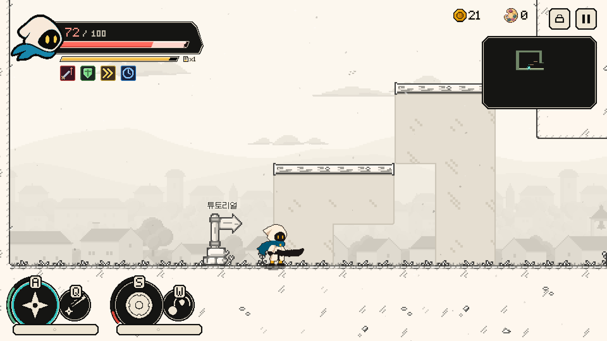
HUD와 연출을 넣고 플레이로 검수
DEVIANT
화면 흐름 설계와 프론트 구현
AIVO
치장 세트, 몬스터 1,800프레임
한짝, DEVIANT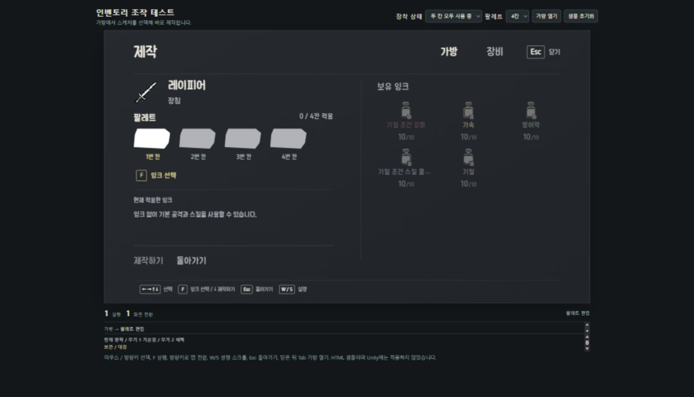
조작 흐름을 먼저 만져 보는 비교본
DEVIANT, 한짝AI는 초안을 만들고, 규칙과 마지막 손질은 제가 합니다
AI에게 맡긴 것
그림과 모션 초안, 반복 계산(정합, 배치), 시험장과 엔진 코드 작성
제가 한 것
규격과 규칙 정하기(크기, 색 수, 테두리), 여러 안 중에 고르기, 마지막 픽셀 손질, 게임 안에서 직접 확인
지키는 원칙
자동 검사를 통과해도 눈으로 다시 봅니다. 확정한 그림은 AI가 다시 그리지 못하게 고정합니다.
밑그림

직접 다듬은 판
DEVIANT 마을 공방 158×203 밑그림을 30색 규격과 선 규칙에 맞춰 직접 다듬었습니다.
잉크 스케치 세계의
2D 액션 로그라이트
- 기간
- 2026.10.06 ~ 진행 중, SSAFY 자율 프로젝트
- 팀
- 6인
- 개요
- 무기 13종을 바꿔 들며 스케치 세계의 챕터를 돌파하는 횡스크롤 액션
- 역할
- 팀장, 아트: 전투 HUD, 아이콘, 픽셀 규격, 인벤토리 화면
- 기술
- Unity픽셀 아트HTML 시험장생성 AIGitLab
SSAFY 판을 마친 뒤 지금은 팀과 기획을 다시 짜는 중입니다.
모든 화면이 같은 손으로 그려진 것처럼

선 직선은 같은 마디로만, 곡선은 마디가 차례로 늘거나 줄게. 원은 4×4 서브픽셀로 매끈하게.
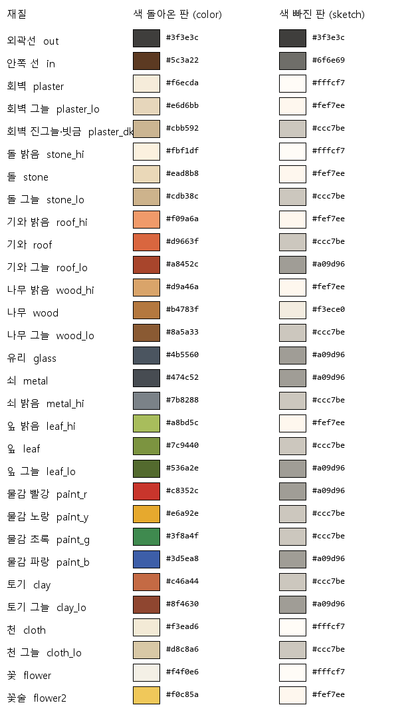
색 지형은 6색, 마을 건물은 30색 규격. 색 빠진 세계라는 설정을 색 수로 지킵니다.
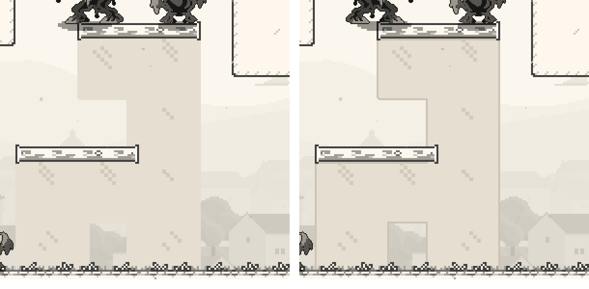
테두리 UI는 먹 2px, 크림 1px. 통과할 수 있는 벽은 가장자리만 다르게.
혼자 매끈하던 HUD를 도트로 통일
전

후
체력판만 도트이고 동전, 버튼, 무기 원, 숫자는 매끈한 그림. 내구도는 5px 줄이라 거의 안 보였습니다.
배치 시안 넷 중 체력판 아래에 버프칸을 내린 안을 골랐습니다. 무기 파괴는 HUD는 지워지고 캐릭터는 번쩍이게 나눴습니다.
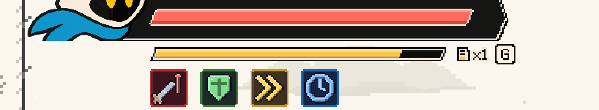
게이지 가득 연출 끝부분은 편집기로 직접 고쳤습니다.
무기 14개, 스킬 40개를 한 벌로
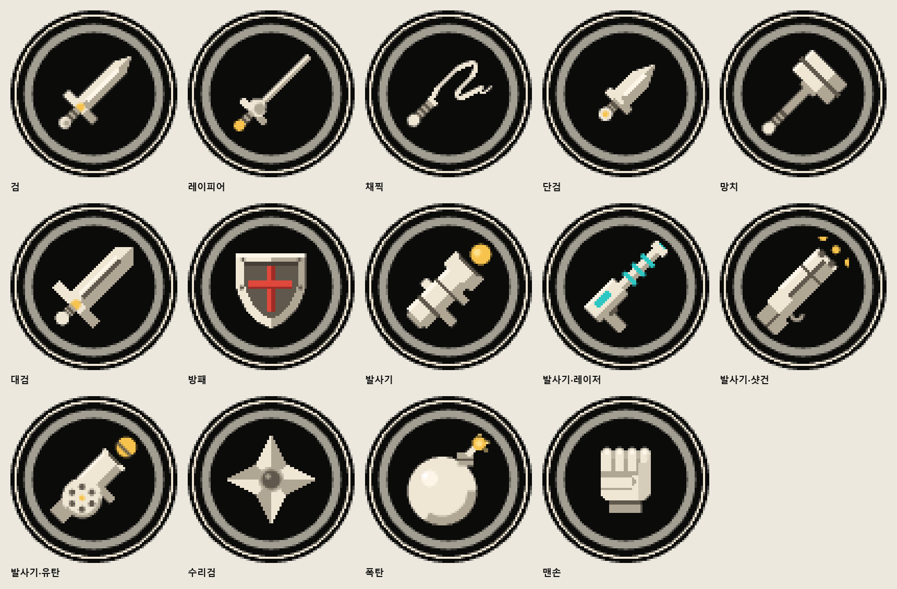
무기 아이콘 48×48. 발사기 세 종류는 실루엣만으로 구분되게.
1차
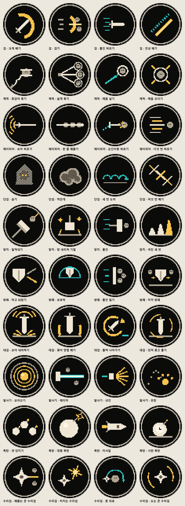
최종
자동 축소한 그림이라 선이 울퉁불퉁하고 작은 원 안에서 읽히지 않았습니다.
크고 단순하게. 채찍은 스케치를, 방패는 참고 그림을 직접 주며 여섯 차례 방향을 잡았습니다.
칸마다 반복하던 조작을 한 화면으로
전: 입력 14회, 화면 전환 14회
후: 입력 7회, 화면 전환 3회
4칸을 채우려면 칸마다 같은 단계를 되풀이했고, F 키 하나가 여러 행동에 걸려 무엇이 실행될지 몰랐습니다.
제작 탭을 없애고, 칸을 고르기 전엔 잉크 영역을 흐리게, 제작 완료는 한 화면으로. 교체는 이동 미리보기로 보이게.
Unity 대신 직접 눌러 보는 HTML 비교본으로 횟수를 쟀습니다.
제 몫 화면과 조작 순서. 잉크를 끼우는 규칙은 팀원 기획입니다.

꺼 둬도 싸우는
웹 방치형 게임
- 기간
- 2026.08.18 ~ 09.28 (6주), SSAFY 특화 프로젝트
- 팀
- 6인, 실서비스 운영
- 개요
- 젓가락 캐릭터가 알아서 싸우고, 재료를 거래소에서 사고팔며 키우는 게임
- 역할
- 팀장, 디자인 총괄: UI 전체 규칙, 치장 아트
- 기술
- UI 디자인생성 AI 이미지Python 이미지 처리React (팀)
- 수상
- 우수상
모든 창이 같은 말투로 말하게
640×360 기준, 2배 3배로만 키워 픽셀이 뭉개지지 않게
창은 종이, 틀은 나무, 강조는 황동
둥근 모서리 대신 직각과 2~3px 픽셀 테두리
주황 버튼은 한 화면에 하나. 지금 눌러야 할 것이 늘 한눈에
갈무리11, 12px 격자
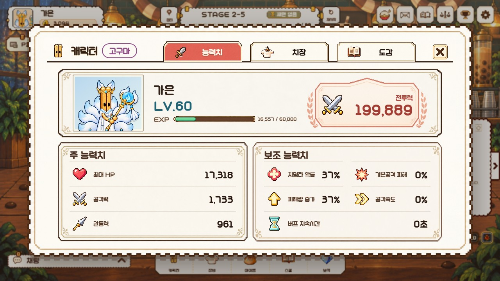
캐릭터
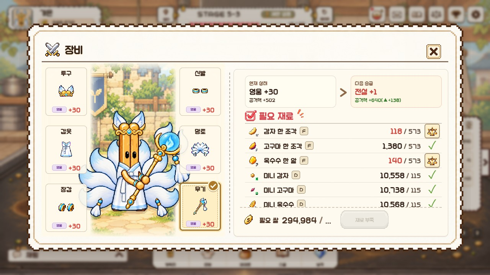
장비 강화
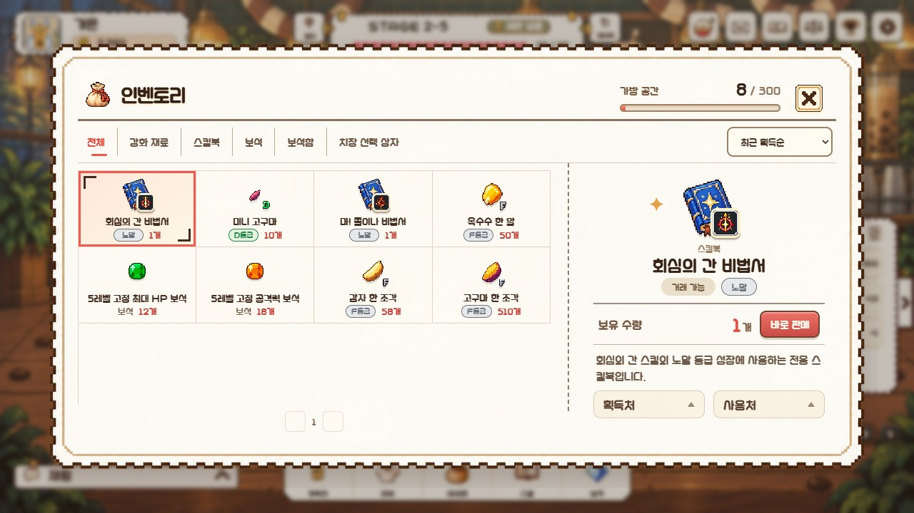
인벤토리
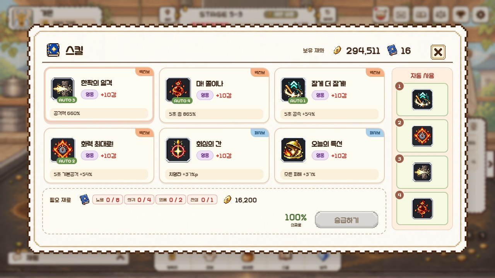
스킬
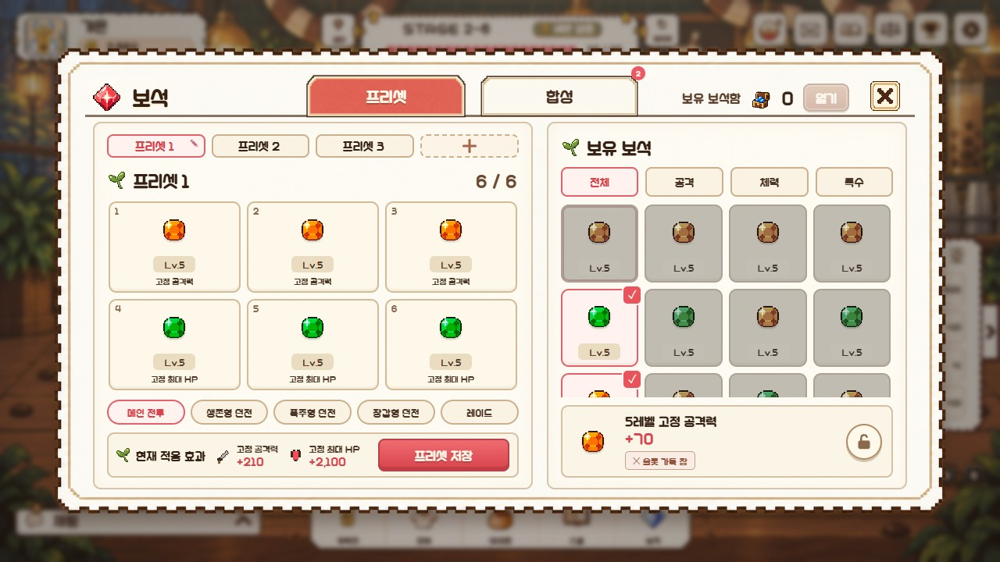
보석

거래소
모으는 재미가 숫자로 닿게


노말 치장 5성까지 2,400개가 필요해 승급이 닿지 않는 목표였고, 카드가 길어 창 아래가 잘렸습니다.
등급별 승급 수치를 다시 정하고, 표기는 "가진 개수 / 필요한 개수"로. 카드는 세로를 줄였습니다.
18개2,400개에서
142px카드 높이, 252px에서
점수가 아니라 고칠 순간을 보여 주는 리포트
- 기간
- 2026.07.06 ~ 08.10 (5주), 6인
- 개요
- 발표와 면접을 촬영하면 음성, 몸짓, 내용을 분석해 영상과 리포트로 다시 보여 주는 AI 말하기 코치
- 역할
- 프론트엔드: 면접과 폴더 화면, 리포트 화면, API 연동
- 기술
- Vue 3PiniaFigmaMediaPipe
연속되는 값(말 속도, 음량)은 선으로, 사건(시선 이탈, 추임새)은 점으로 나눠 그렸습니다.
상단 시선 이탈 11회와 질문별 합계 10회가 달라, 같은 기준으로 보이게 고쳤습니다.
결과를 녹화 전 시선 가이드, 실제 업로드 단계 표시 등 할 일 다섯 개로 정리했습니다.
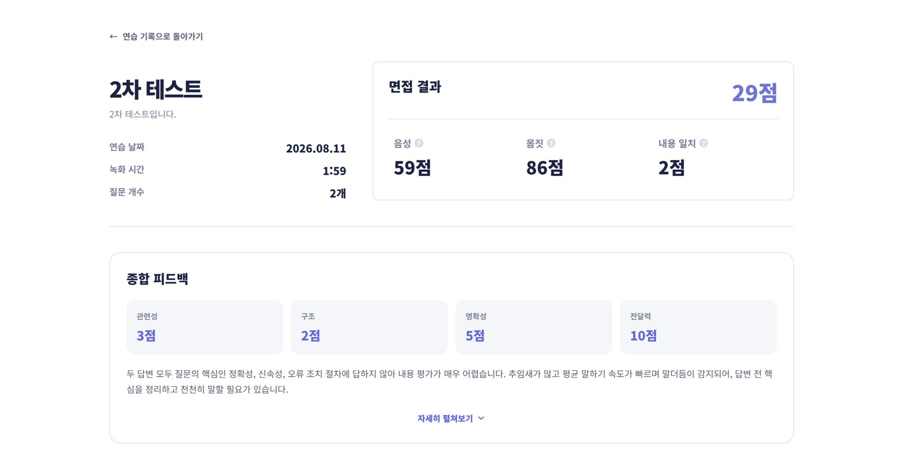